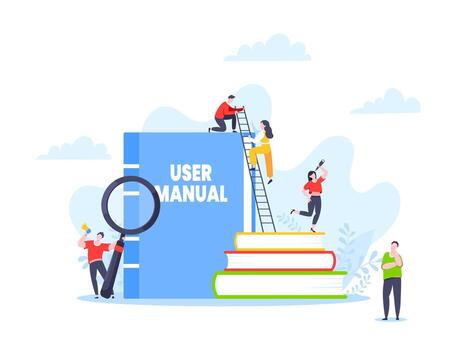

SecureInfo
Bienvenidos a SecureInfo, su plataforma de seguridad digital!
Bienvenidos a SecureInfo, su plataforma de seguridad digital!
Dirigido a empresas que carecen de un marco normativo interno. Consiste en el mapeo, estructuración y redacción de políticas personalizadas para regular el acceso, uso y control de la información confidencial de los clientes y socios comerciales.
Desarrollo de guías técnicas y operativas paso a paso para el manejo seguro de los datos. Este paquete garantiza la documentación integral de los procesos críticos de la empresa y la trazabilidad de las acciones, facilitando la creación de respaldos y la estandarización de tareas.

Programas de formación para los colaboradores enfocados en el manejo responsable de la información sensible y el uso correcto de los equipos de cómputo. El objetivo es instruir al personal en el cumplimiento normativo interno para mitigar errores humanos y evitar faltas administrativas o legales.
Evaluación periódica del uso de la infraestructura tecnológica para identificar vulnerabilidades y brechas de seguridad antes de que sean explotadas. Incluye un esquema de monitoreo y acompañamiento posterior para asegurar la correcta adopción de las medidas y garantizar la continuidad del negocio sin interrupciones operativas.